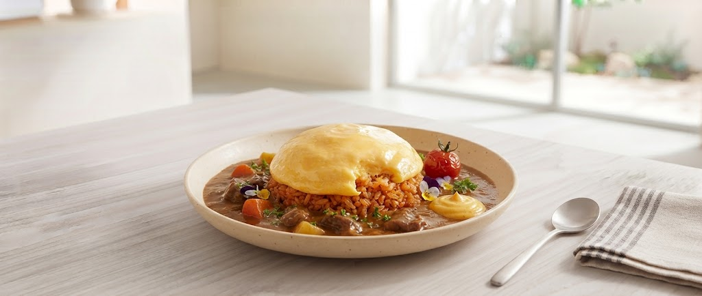
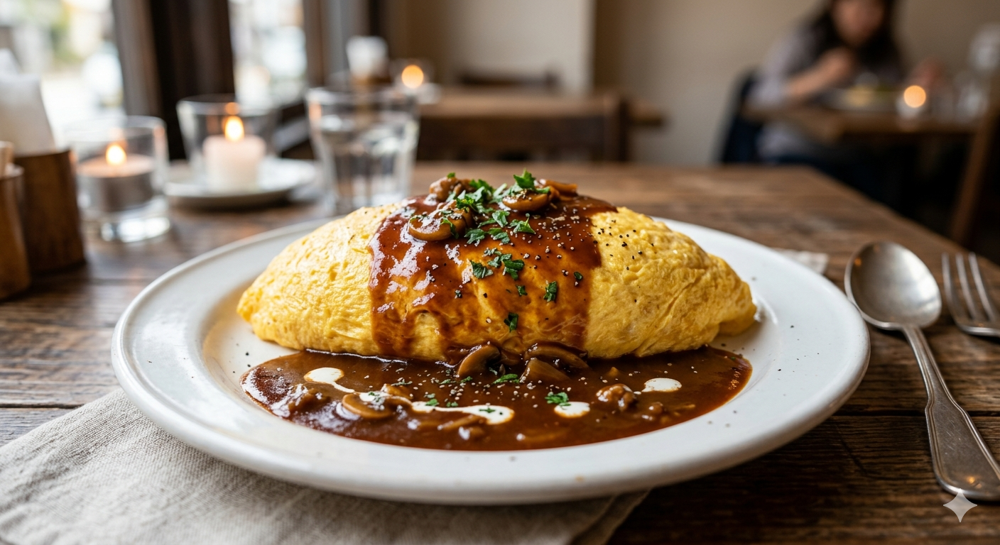

「キッチンエコー」の魂を継承。
一口食べれば、昭和の記憶が蘇る。
Scroll Down
初回来店時、画面をご提示ください!
最新のランチ情報はTwitter(X)で毎日配信中
戦後の混乱期、女性店主として異例のスタートを切った「キッチンエコー」。 不慮の火災により一度は失われたその場所を、現在は「パリ食堂」として、三代目・四代目が再び灯しています。

創業100年目
耐震工事PJ進行中
マイルドな甘味の直後に訪れる、心地よい辛味の波。揚げたてのカツ。この絶妙なバランスこそが伝説。
山形では珍しい、洋食屋さんの座敷個室。お子様連れでも、大人数の宴会でも、気兼ねなくお過ごしいただけます。
「本当にこの値段?」と驚かれるボリューム。ランチはいずれも1,000円前後と、地元の人が毎日通える良心的な設定。
「こんなサービスあったらいいな」を形に。現在準備中の新企画です!
「少しだけ食べたい」「他の洋食メニューと一緒に楽しみたい」というお声にお応えし、少量サイズやお得なセット展開を準備中です!
お酒を愉しんだ後の「最高のシメ」に。洋風居酒屋だからこそ味わえる、一口サイズの締めエコーライスセットをご提供します。
所在地
〒990-0047 山形県山形市旅篭町2丁目1-40
※山形銀行仮本店の西側。歴史ある白い提灯が目印です。
営業時間・定休日
ランチ・ディナー営業中
定休日:日曜日